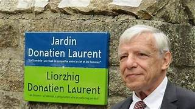

Kont Riodor hag e bried
Le Comte Riodor et son épouse
Count Riodor and his Wife
Texte et mélodie enregistrés
Auprès Mme Anna Soubenn à Pont-Croix
qui dit les tenir de Joséphine Castell
Communiqués par M. Padrig Kobis le 6.09.2012

Enregistrement 1 (extraits)
Enregistrement 2 (extraits)
"Kont Riodor hag e bried" chanté par Anna Soubenn
Source: 2 Enregistrements sonores D. Laurent
|
BREZHONEG
KOTRIODOR HAG E BRIED I 1. Kotriodor hag e bried [1] A zo yaouankik dimezet. 2. Kotriodor `z ae da chaseal. 'Z aio ket d’ar ger ken a vo deiz. 3. Pa z 'edo frapet barzh er c’hoad Ur werc’hezh outañ rekontra. [2] 4. - Ur gorzenn-vazh ganti n’he dorn: [3] War benn honnezh e oa skrivet. 5. - Penaos daou bried renkomp-ni? [4] Ma gwreg er ger zo galloudek. [5] 6. - C'hwi zo kontant da vervel e prezant Peotramant chom seizh vloaz ’langisant? 7. - Me zo kontant da vervel e prezant Evit chom seizh vloaz ‘ langisant - 8. - Va mabig paour, pa eot d’ar ger, C'hwi c'houllo diouzhtu ur beleg II 8.1 Er ger pa oa eno arruet, Er maner diouzhtu oa pignet, Er maner braz e oa pignet. 8.2. E-lein e gambr oa e bried: Ar wreg yaouank a oa kousket. 8.3 Ar wreg yaouank a oa kousket Gant an ael bihan en he c’hichenn, Gant an ael bihan en e gavell. 8.4. - Ma mammig paour din-me glasket Hirio diouzhtu ar beleg 9. - Va mabig paour, petra zo c’hoarvet Pa c’houlez nouenn ken abred ? - 9.1. En ur gambr partikuilher Eno voa preparet ar gwele. - 9.2. Lakaet e oa war ar vazh-skañv, Ha lar't netra d’ar wreg yaouank. III 10. - Ma mammig paour, lavar't din-me, Petra a griad glevan-me? 11. - Ar c’houlaouioù bras a zo laeret [6] D’ar mevelien int tamallet. 12. - Ma mammig paour lavar't din-me, Petra a-hont a glevan-me? Komz: "On chantait en ce temps la veillée des"morts" 13. - Ur vatez vihan zo en ti-mañ Gwizkig 'kannañ d'am mab bihan. [7] 14. - O mammig paour, lavar't din-me, Petra ar glaz a glevan-me? 15. - Mab rou ar Frañs a zo marv: A zo glaz dezhañ e pep bro. 16. - Va mammig paour, lavar't din-me, Perag emaon ’kañvioù gwisket? 16.1 - Ma merc’hig paour, 'r mod zo savet Gwragez yaouank ’veldoc’h gwisket. 17. - Gwragez yaouank evelse gwisket, Gwisket kañvioù da vout ilizet. [8] 18. - O mammig paour lavar't din-me Da belec’h a rit-c'hwi mont bremne? 19. - Me ’z afen bremne d’an iliz-parrez Ac’han’ e glevo ar c’heloù. IV 19.1 Hag hi a yae d'an deiz-war-eizh. En he blas enno oa plaset. 20. En iliz, pa oa hi erruet, Kadorioù oa kañviou-livet. 21. - Aotroù kloc’her, lavar't din-me, Perag ma 'r c'hadorioù kañvioù-livet? 22. - Ma merc’hig paour, me n’ouzon ket: Goullit gant person ho parrez! 23. - Aotroù person deus ma farrez, Perak ma 'r c'hadorioù kañvioù-livet ? 24. - Ma merc’hig paour, med n’ouzoc'h ket?: Kotriodor hag ho pried Zo hiriv eizh-deiz interet. 25. - Me zo 'vont bremne war bez ma gwaz Ken afen eñ servich’ er-vat. - V 25.1 Er vered diouzhtu pa oa erruet War bez he gwaz e oa semplet. 25.2 Hag ar c'honsierj [9] deus ar vered N’eus kavet tu d'hen gemeret. Komz: - " Ar penn-ti, quoi- Oui… - Hi oa goude-se „avadet”. Hag e oa ichouioù bras he chapel e gerc’he. Hag erruaz er ger neuze..." 25.3 - Ma mammeg paour, se zo kruel! Marv ma gwaz mezh ouzhoc’h ‘ peus kuzhet 26. Er ger eno pa oa erruet Un testamant a zo lennet. 27. - Klaskit mat e reizh d’am mab bihan. Me rayo un testament 28. Ha setu eo ma lod-partaj Hini eo ma holl eritaj - 29. Hag hi goude war bez he gwaz. Eno a gouezh, a-sav ar gwad. 29.1 Ha war ar bez e voa kouezhet Ha marv-mik e voa kaset Ha marv-mik e voa du-se. 30. Hag ar vamm-gaer pa oe sklaeraet He c’halon, sur, a oa mantret. 31. He c’herent d’an itron yaouank A rae o reproch d’ar vamm-gaer J2. Pe ar pezh kuzhet deus oute Marv he gwaz hep lavar den. [10] Kanet gant Ana Soubenn eus Pont-Groaz Pozioù an eil stumm hepken e lizherennadoù stouet |
FRANCAIS
LE COMTE RIODOR ET SA FEMME I 1. Le comte Riodor et son épouse [1] Se sont mariés bien jeunes. 2. Le comte Riodor s’en allait chasser Il ne rentrera pas tant qu’il fera jour. 3. Quand il fut enfoncé dans le bois Une vierge vint a sa rencontre. [2] 4. Elle tenait a la main une tige de roseau [3] Sur la tête duquel était écrit quelque chose. 5. - Nous ferions deux fameux époux! [4] Il faut que j'en parle à ma femme. [5] 6. - Acceptez-vous de mourir à présent Ou alors de rester sept ans à dépérir ? 7. - J’accepte volontiers de mourir à présent, Plutôt que de rester sept ans à dépérir. 8. - Mon petit, quand vous rentrerez chez vous, Vous demanderez tout de suite un prêtre. - II 8.1. Et chez lui, quand il y fut arrivé Il est monté aussitôt au manoir Il est monté au grand manoir. 8.2. Au-dessus de sa chambre, il y avait son épouse, C'est là que sa jeune femme était couchée. 8.3. La jeune femme était endormie Avec le petit ange à son côté Avec le petit ange dans son berceau. 8.4. - Ma chère mère, pour moi demandez Aujourd’hui sur-le-champ un prêtre. 9. - Mon pauvre fils, que s’est-il passé Pour que tu demandes l’extrême-onction si tôt ?- 9.1. Dans une chambre séparée, On avait préparé un lit... 9.2. Ce furent les tréteaux funèbres. Et on n’en dit rien à la jeune femme. III 10 - Ma chère belle-mère, dites-moi, Quels sont ces cris que j'entends? 11. - Les grands chandeliers ont été volés [6] On accuse les valets. 12. - Ma chère belle-mère, dites-moi, Qu’entends-je là-bas? Commentaire: "On chantait en ce temps la veillée des"morts" 13. - Une petite servante est ici Elle lave les langes de mon petit-fils.[7] 14. - Ma chère belle-mère, dites-moi, Qu’est ce que ce glas que j’entends ? 15. - Le fils du roi de France est mort. On sonne le glas pour lui dans tous les pays. 16. - Ma chère belle-mère, dites-moi, Pourquoi suis-je en habits de deuil? 16.1 - Ma chère fille, c'est la mode: C'est ainsi que s'habillent les jeunes femmes, 17. - Les jeunes femmes s'habillent comme vous. Elles prennent le deuil pour leurs relevailles. 18. - Ma chère belle-mère, dites-moi: Où vous rendez-vous à présent? 19. - Je m'en vais à l'église de la paroisse, J'y entendrai les dernières nouvelles. IV 19.1 Elle alla à la messe de huitaine. A sa place habituelle elle s'assit. 20. A l'église quand elle arrive Les sièges sont tendus de noir. 21. - Monsieur le sonneur, dites-moi, Pourquoi ces chaises tendues de noir? 22. - Ma chère fille, je n’en sais rien, Demandez au curé de votre paroisse. 23. - Monsieur le curé de ma paroisse, Pourquoi ces chaises tendues de noir? 24. - Ma chère fille, ne le savez-vous pas? Le comte Riodor, votre époux, Cela fait huit jours qu'on l'a enterré. 25. - Je vais, de ce pas, sur sa tombe, Car j'ai un service à lui rendre. - V 25.1. Dès qu'elle fut arrivée au cimetière Sur la tombe de son mari elle s'est évanouie. 25.2 Et le concierge [9] du cimetière Ne trouva pas le moyen de le faire enlever. Commentaire: "- C’était le gardien, quoi- - Oui - Elle aurait été, après cela, autorisée... C'était les grands espaces libres dans sa chapelle qu’elle recherchait. Et ensuite elle rentra chez elle." 25.3. - Ma chère mère, voilà qui est cruel! La mort de mon mari, honte à vous de me l’avoir cachée. 26. A la maison, alors, quand elle est arrivée, C’est la lecture du testament. 27. - Faites bien valoir les droits de mon petit-fils. - Je m'en vais faire un testament : 28. Voilà ce que j’aurai en partage: Celui qui est tout mon héritage. – 29. Alors, elle s’en fut sur la tombe de son époux. Là elle tombe, le sang figé. 29.1 Et sur la sépulture elle est tombée Quand on l'emporta, elle était morte Elle était morte sur le coup. 30. Et sa belle-mère, quand elle en fut informée, Eut le cœur, bien sûr, accablé. 31. Les parents de la jeune dame Firent le reproche à la belle-mère, 32. De leur avoir caché Que son mari était mort, sans en rien dire à personne. [10] Chanté par Anna Soubenn de Pont-Croix Les strophes propres à la version 2 sont en italiques |
ENGLISH
COUNT RIODOR AND HIS WIFE I 1. Count Riodor and his wife [1] Were quite young when they wed. 2. Count Riodor went out hunting Won't be back before the night. 3. When he was entangled in the wood, A Virgin came to meet him. [2] 4. A reed-stick she held in her hand, [3] With something written on its head: 5. - How could both of us manage to marry, : [4] I have my wife at home: up to her to decide! [5] 6. - Do you prefer to die at once, Or to decay and die in seven years? 7. - I prefer to die at once Rather than suffer for seven long years. 8. - My poor son, when you come home, Send immediately for a priest! II 8.1 When he came home. He went at once upstairs Right to the top of the big manor. 8.2 Above his room was that of his wife. There the young woman was in bed. 8.3 The young woman was in bed A little angel was by her side. A little angel was in the cradle. 8.4. - My dear mother, send for a priest! And do it without delay! 9. - My dear son, what happened? Why need you the Extreme-Unction so early? - 9.1. In his separate room There they had put up a bed. 9.2. He was laid on the funeral trestles. But they said nothing to the young lady. III 10. - My mother-in-law, tell me, What are these cries I hear? 11. - The big candlesticks were robbed. [6] The menservants are suspected. 12. - My mother-in-law, tell me, What do I hear there? “Comment: Back then, they sang during the wake for the dead.” 13. - A little maid-servant is here. She washes my grandson's nappies. [7] 14. - My mother-in-law, tell me, Why do I hear them toll the knell? 15. - The son to the King of France is dead. They sound the knell everywhere. 16. - My mother-in-law, tell me, Why am I clad in mourning clothes? 16.1 My dear daughter, this is the new fashion: Young women dress this way, 17. - Young women are dressed in that way When they go to their churching. 18. - O dear mother-in-law, tell me, Where are you going now? 19. - I am going to our parish church To hear there the latest news. IV 19.1 And she went to the parish's eight day mass. She was shown her customary pew. 20. And when she arrives in the church All pews are hung in mourning veils. 21. - Bell ringer of my parish, Why are the pews hung with black veils? 22. - My dear daughter, I don't know. Ask the Reverend parson of the parish. 23. - Reverend parson of my parish, Why are the pews hung with black veils? 24 - My dear daughter, I don't know... Count Riodor, your husband, Was buried eight days ago. 25. Now I'll go on my husband's grave Where I think I may serve him best. V 25.1 To the churchyard she went at once. And she swooned on her husband's grave. 25.2 That he would be removed from the churchyard: The concierge did not know how to do that. Here the singer talks: "The churchyard attendant." -Yes - "... She would have been then empowered... There was a lot of spare space in her church-chapel. That's what she had in mind. Then she went home. 25.3 - My mother-in-law, it was cruel To conceal from me my husband's death, aye, for shame! 26. When she had returned home She heard the reading of the testament. 27. - Safeguard well the rights of my grand-son! - I, too, will make a last will and testament! 28. Here is my heirloom He is my whole heirloom. 29. And she then fell on her husband's grave. There she fell and her blood ran cold. 29.1 And she collapsed upon the grave And there suddenly she died. She died all of a sudden. 30. And her mother-in-law, when she heard of it, She was quite heartbroken. 31. And the relatives of the young lady Reproached her mother-in-law 32. With concealing from her Her husband's death and telling her nothing. [10] Sung by Ana Soubenn from Pont-Croix The stanzas specific to version 2 are in italics |
NOTES:
|
[1] Ce chant m'a été communiqué sous forme de 2 enregistrements sonores par M. P. Kobis. N'ayant pas l'oreille exercée à l'écoute d'une langue qu'on entend très peu là où j'habite, je ne suis pas certain d'avoir tout saisi. Les notes ci-après ont trait à ces incertitudes.
[2] Je ne sais trop s'il faut comprendre "la (sainte) Vierge" (ar Werc'hez) ou "une vierge" (ur werc'hez, une fée). Si c'est la Mère de Dieu qui, à la strophe 8, recommande au Comte, qu'elle appelle "mon fils", de quérir un prêtre, on pencherait pour la première possibilité. Mais les strophes 4 à 7 semblent infirmer cette interprétation. [3] Si la chanteuse a bien dit "ur gorsenn vazh", la vierge est censée tenir en main une "tige de roseau" portant une inscription la concernant. Dans une version de Penguern ( 3° A Outru a Conte , str.15 à 17), la fée parle d'un engagement écrit souscrit par le père du comte. Peut-il s'agir ici d'un parchemin sur lequel figurerait le nom du comte à côté de celui de la vierge? Cette interprétation conviendrait au caractère général de la pièce (cf. note 7). [4] Mot-à-mot comment nous arrangeons-nous pour (devenir chacun un) époux? [5] Mot à mot: "ma femme à la maison est 'puissante'". Le comte veut sans doute dire qu'il ne sera pas libre de sitôt. [6] Dans un commentaire parlé, la chanteuse indique que ces chandeliers servaient aux veillées funèbres. [7] "Gwizkig"= "petits habits". "(o) kannañ" = "laver". Je ne suis sûr ni de ma transcription, ni de ma traduction. Cette réponse montrerait que le clan de la mère du comte, s'intéresse avant tout aux intérêts de l'héritier: "votre petite belle-soeur est dans cette maison... et cajole MON petit-fils." La variante qui suit le texte principal introduit de nouveaux couplets qui renforcent la tonalité "juridique" , propre à cette version. Il est question de testament, d'héritage, de partage et d'un grief précis à l'encontre la belle-mère, celui de dissimulation d'un décès. (Dans cette version le fils ne recommande pas le silence à sa mère). Que la jeune veuve n'ait pas été prévenue immédiatement du décès de son mari lui a rendu en outre impossible le transfert du corps dans l'enfeu familial . [8] "Bout ilizet" ("être 'églisé'", iliz=église) traduit presque littéralement l'anglais "churching", 'relevailles'. [9] J'ai noté en italiques certains commentaires où la chanteuse donne son interprétation du texte. Ici, elle explique, me semble-t-il, que la jeune veuve demande au concierge du cimetière de déplacer le cercueil du cimetière vers son propre enfeu dans l'église, mais que cela lui est refusé. [10] Un autre enregistrement sonore de Donatien Laurent était joint à l'envoi de M. Kobis. Une version de Sire Nann (An Ao Kont hag e bried= M. le Comte et son épouse) intitulée "Aotrou Egemont", chantée par Mme Marie Harnay et d'autres personnes, dans un dialecte que contrairement à Donatien Laurent, je parviens à peine à comprendre. J'ai toutefois saisi les trois premières strophes: Aotroù Egemont ema savet / Ker yaouankig mat e oa dimet. Ker yaouankik mat e oa dimet / Unan trizeg vloaz ’n arall p’warzeg Unan trizeg vloaz ’n arall p’warzeg / Hag ur mab pa e oa pemzeg Sire Egmont s'est levé / Il a été marié bien jeune. Bien jeune on l'a marié: / Un (époux) à 13 ans, l'autre à 14. L'un à 13 ans l'autre à 14 / Et un fils, quand il eut 15 ans... |
[1] This song was sent in as two audio records by Mr P. Kobis. As I am not used to spoken Breton, a language scarcely in use in the area where I dwell, I doubt that I accurately construed all I heard. The notes hereafter point out some of these uncertainties.
[2] I wonder if this stanza is about "the (holy) Virgin" (ar Werc'hez) or "a virgin" (ur werc'hez, a fairy). If it is the same Holy Virgin who in stanza 8, entreats the Count, whom she names "my son", to send immediately for a priest, the first possibility should be preferred. But stanzas 4 with 7 seem to be against this interpretation. [3] If the singer really said "ur gorsenn vad", the maiden is supposed to hold in her hand a "reed-stick" mentioning her own name. In one of the de Penguern versions ( 3° A Outru a Conte , stanzas 15 with 17), the fairy mentions an agreement passed with the Count's father. Does "gorsenn" apply here to a "roll" (of parchment, for instance) embodying such an engagement? This interpretation would fit the overall character of the piece (see note 7). [4] Literally: "How shall we manage to become husband and wife? [5] Literally: "my wife at home is 'powerful'". The count probably means that his wife is in good health and not likely to die so soon. [6] In a spoken comment, the singer mentions that candlesticks were used for wakes over corpses. [7] "Gwizkig"= "little clothes". "(o) kannañ" = "laundering". But I couldn't swear that my transcription or my translation thereof are correct. This answer would demonstrate that the clan of the count's mother are above all anxious to defend the interests of the child: "a little maid is in this house... and she is washing MY grand-son's clothes." The variant appended to the main text introduces new stanzas increasing the "juridical" character of this version. It is interspersed with words like "testament", "heirloom", "lot" and "share". A specific reproach is held against the mother-in-law: that she has concealed from her daughter-in-law her husband's death. (In this version the son does not ask his mother to keep silent about it). “The fact that the young widow was not informed immediately of her husband’s death also made it impossible for her to have the body transferred to the family tomb in the church.” [8] "Bout ilizet" ("to be churched'", iliz=church) translates almost literally the English "churching". [9] I wrote in italics some commments in which the singer explains how she understands the lyrics. In the present stanza, she explains that the young wife asked the churchyard attendant for the permission to move the coffin out of the churchyard, into her own chapel in church, but this was denied her. [10] Another sound recording by Donatien Laurent was included with Mr. Kobis’s mailing. It is a version of “Sire Nann” (“An Ao Kont hag e bried” = “The Count and his wife”), entitled “Aotrou Egemont,” sung by Mrs. Marie Harnay and others, in a dialect which —unlike Donatien Laurent— I can barely understand. I have nevertheless managed to grasp the first three stanzas; here they are: “Aotroù Egemont ema savet / Ker yaouankig mat e oa dimet. Ker yaouankik mat e oa dimet / Unan trizeg vloaz ’n arall p’warzeg Unan trizeg vloaz ’n arall p’warzeg / Hag ur mab pa e oa pemzeg …” “Sire Egmont has risen / He was married very young. Very young he was married: / One (spouse) at 13 years, the other at 14. One at 13 years, the other at 14 / And a son was born to them when he was 15…” |
Mélodie chantée par Anna Soubenn, arrt MIDI Chr. Souchon
Mélodie "Aotrou Egemont" chantée par Marie Harnay , arrt MIDI Chr. Souchon

Retour à "Aotroù Nann"
Table